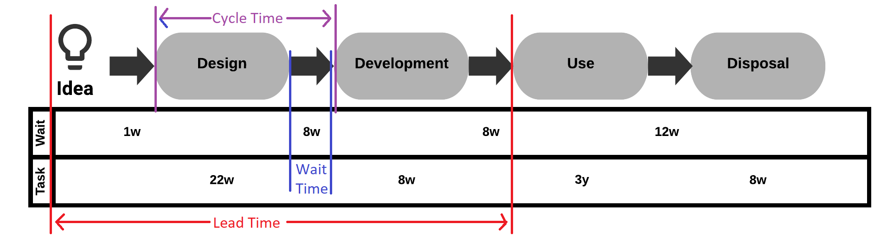

In the digital production world, we call this production line a pipeline. A pipeline is a flow of change to release. The pipeline, like the production line, processes tasks in series. We call these series of different tasks cells. We can visualize it as a flow from the left (idea) to the right (release). When we say “shift left,” we talk about moving responsibility upstream.
Devops is the application of physical manufacturing efficiencies applied to digital production. In its current form, this analogy only takes us so far. Physical production lines aim to deliver an optimized flow of homogenous products. Digital products, once produced, have unlimited distribution with digital downloads.
Our pipeline delivers change
The main difference in digital product delivery is not that we deliver products in our pipeline but that we process changes to our product. Digital marketplaces move quickly, so we need to introduce change efficiently into our products. Change is vital to growth as we stagnate and fall behind our competitors without it. By making the delivery of change the center of the digital transformation of our organization, we can optimize our efficiencies for growth.
We need to implement connected flow
As in a production line, a pipeline flows through the cells, with each step adding some value by performing various actions on the product. The unit flowing through is the physical product in a physical production line. With digital products, it is not the flow of products we work on but changes to and innovations in our development. As we visualize the flow, which we call a value stream map, we can document it. It gives us the information to design improvements to optimize the flow to be more efficient and productive.
The diagram below shows an example value stream map for a typical software product delivery pipeline.
There are inconsistent definitions across the Internet for measuring the various parts of the value stream. Some concepts translate directly from physical manufacturing; others are not so simple. However, measuring the value streams is one of the most fundamental activities in transforming your organization. Mapping your value stream and understanding where time waste occurs will allow you to focus your activity on the most significant impact.
Align adjacent cell's outputs and inputs
A well-organized interface or handover between cells ensures that the inputs and outputs are closely aligned and connected to improve flow. Imagine a production line. One cell makes boxes. Across the factory, another makes widgets. The ‘box’ cell outputs packaging boxes ready for the next cell to fill. The box-creating cell takes empty boxes from the output of the box production line and moves them across the factory to a shelving unit. The widget cell brings batches of boxes from the shelves to the widget line to package them up. It adds waste to the system. We need high batch numbers of containers to ensure ample supply for the widget line. It also involves unnecessary inventory movement (the boxes) around the factory. We solve this problem by moving the lines into cells and coupling the cells so that the box line feeds the widget line. We increase flow and reduce inventory.